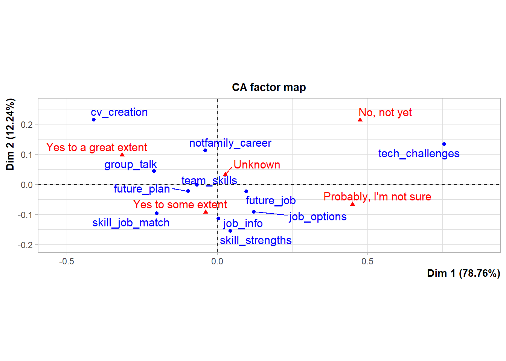

Rows: 291
Columns: 33
$ Timestamp <dttm> …
$ `Name (Optional)` <chr> …
$ `Email (Optional)` <chr> …
$ Gender <chr> …
$ `Program of study` <chr> …
$ `Name of the degree Program (e.g BBA/BS Sociology/...)` <chr> …
$ `How do you feel about career planning?` <chr> …
$ `Do you think that Artificial Intelligence, Machine Learning, Robotics and Other automation are serious threats to your job prospects in 5 to 10 years times.` <chr> …
$ `Have you learned about different careers other than those of your family careers?` <chr> …
$ `Do you know how to find information about jobs and careers?` <chr> …
$ `Have you thought about how jobs and careers may change in the future?` <chr> …
$ `Do you understand the options you have for education and work after you leave university?` <chr> …
$ `Can you list your strengths related to the skills you possess?` <chr> …
$ `Do you feel you can create a CV?` <chr> …
$ `Are you comfortable speaking in front of a group of people?` <chr> …
$ `Do you have ideas about what you might do in the future?` <chr> …
$ `Do you have ideas about which careers match your interests and skills?` <chr> …
$ `Over the last year, have you developed listening, teamwork and problem solving skills?` <chr> …
$ `Do you know yet what career areas you are interested in?` <chr> …
$ `If you can, please list one or more career areas that you think will become very challenging in next 5 years.` <chr> …
$ `Which of the following have you done? Check as many as apply.` <chr> …
$ `How would you rate your strength in the following career skills? [Communcation skill]` <chr> …
$ `How would you rate your strength in the following career skills? [Communicating in writing]` <chr> …
$ `How would you rate your strength in the following career skills? [Working with people]` <chr> …
$ `How would you rate your strength in the following career skills? [Working with data and numbers]` <chr> …
$ `How would you rate your strength in the following career skills? [Dressing appropriately for a workplace]` <chr> …
$ `How would you rate your strength in the following career skills? [Being on time for work or meetings]` <chr> …
$ `How would you rate your strength in the following career skills? [Having good attendance]` <chr> …
$ `How would you rate your strength in the following career skills? [Understanding workplace safety rules]` <chr> …
$ `How would you rate your strength in the following career skills? [Being motivated and taking initiative]` <chr> …
$ `Anything you want to say about future career challenges and opportunities or related feedback` <chr> …
$ `Are you familiar how Artificial Intelligence, Robots, Machine Learning and other new technologies are a challenge to your future job?` <chr> …
$ `Name of the University` <chr> …Assessing graduates readiness for job market skills
Zahid Asghar, School of Economics, Quaid-i-Azam University
Abstract
Employers are facing a great chasm between skills currently prevailing, and skills required. On the other hand, there is an overwhelming youth seeking jobs. In a very challenging environment where skills for jobs of today and tomorrow are changing rapidly, it is important to assess our graduates’ readiness for jobs with skills in demand in the market. This study is explores how familiar our graduates with challenges and major disruptions in jobs market by digital revolution, artificial intelligence , machine learning among many other developments. I also assess graduates’’ readiness for jobs of today and tomorrow also on a certain skill set highlighted by World Economic Forum 2020 Opinion survey conducted from recently graduated/last year university four year degree program students and MPhil/PhD students indicate element of worriness, lack of awareness of future uncertainties and relatively more focus on hard work than soft skills. Absence of career counseling and being in the right discipline are perceived as some of the main reasons for many graduates’ poor academic performance and under-equipment with right set of skills. On the positive side, large number of students reported as hard working and punctual which implies that better mentoring and exposure to our youth may equip them with right skills and they may avail right openings and excel. There is need that universities adapt a new learning eco-system for producing graduates to be successful in the job market. Keywords: Future jobs, Future of Universities, Time vs Learning goals
Introduction
Pakistan has huge youth bulge and economic growth is not sufficient to create opportunities to absorb this burgeoning youth. On the positive side, digital revolution, gig economy and Silicon Valley era have opened jobs which are global in nature. But is our work force ready to benefit from such opportunities which exist both at national and global level? What sort of skilling and reskilling may help our burgeoning young population and labor force to unlock their potential? How and where long-term investment by the institutions in skilling and reskilling of youth and working population should be made? All this demands deep introspection and integrated thinking as finding answers to these questions and devising a mechanism, accordingly, will help our youth to excel besides having healthy economy. Two decades back, occupation specific skills and high academic qualifications were sufficient for graduates to enter into the workforce. However, due to digital revolution, the selection criteria for a sizeable portion of employees in the workforce began to change Griffin and Care (2015) . Firms, companies and entrepreneurs are placing increasing value on graduates being work ready. Employers invest little in workers as they may hire someone for a short term. In gig-economy, one is not looking for hiring of young graduates as their precious future commodity, therefore, they prefer to hire graduates well equipped with skills instead of hiring and investing to make graduate a precious commodity Akdere, Hickman, and Kirchner (2018) .
Today, employers invest little in workers as they may hire someone for a short term. In gig-economy, one is not looking for hiring of young graduates as their precious future commodity, therefore, they prefer to hire graduates well equipped with skills instead of hiring and investing to make graduate a precious commodity.
With a broader vision and exposure, they can communicate and work in coordination with others.
According to various estimates, Pakistan has about 60% population under 30 years of age while almost 36% population is under age 14 (WDI data). Future of our young population and economic growth of Pakistan is dependent on the type of learning ecosystem we are going to have. If one wants to have egalitarian society, one has to work on reducing skill gap between haves and have-nots. Besides income inequality, kkills inequality is also one among differing degrees of inequalities. Despite lot of opportunities for learning skills but so far sustainable development requires certain kind of skills that come with a formal education. This is also called in economics jargon: skill-biased technical change. In addition, there are informal know-how: tacit skills which develop when one lives among other skilled workers. Haque and Nayab (2022) discussed various opportunities which exist for youths in the labor force. My focus is on assessing labour force readiness on skills for jobs of today and tomorrow for tapping these opportunities. According to Haque and Nayab (2022)
“Are we prepared for this new world? Our education system our governance system all need to be realigned if we are to meet this new world. Many new opportunities will open only if the economy and the policy are both seriously reimagined.”
Under rapidly emerging new technologies and digital revolution, there is urgent need to have an assessment of graduates skill set and devise a new learning ecosystem to equip our youth with right skills. This will not only reduce skill inequality but they will find opportunities to excel. Moreover, it will also provide due boost to our economic growth through increase in productivity of various organizations both in the public and private sector. There is an increasing skill gap in almost all the occupations ranging from jobs of a car mechanic to digital services provider. Digital revolution and Covid-19 pandemic disruption has exposed an ever increasing skilling gap at the globe, in general and in a developing country like Pakistan, in particular. Simultaneously, this has posed serious challenges to universities to continue their business as usual.
There is need for significant effort and deliberate practice to think expansively to know what steps are required for uncertain future work. How to develop a learning ecosystem to train both youngsters and working population with relevant skills to do well in jobs of today and tomorrow. The dilemma is that neither educational institutions nor industries/companies are helping to prepare to overcome skill gap and bridge skill inequalities. Academia has not been out of its comfort zone and trying to produce research which helps it to reach higher grade instead of focusing on imparting skills which are in high demand. Companies are not investing in training to develop requisite skills. Many of gig economy companies prefer to buy talent instead of uilding talent with high level of professionalism. This has seriously deteriorated the capacity to cope with challenges posed in the third decade of the 21st century Weise (2020).
An important measure of success of a graduate to equip herself with requisite skills needed in the market. We have examined this through a survey from final year BS students, MPhil and PhD enrolled students. Questionnaire is mainly based on skills set mentioned by World Economic Forum-2020 for future jobs.
Main objective of this study is to explore how our graduates are perceiving challenges posed by penetration of artificial intelligence, machine learning, big data and other digitaltechnologies and get an idea about graduates’ skills required in the job market. How do they rate their skills required for jobs of today and tomorrow? Secondly, an overview of new learning ecosystem will be discussed and how universities can play a role and what will be future perspective of universities after online learning platform has become fully functional. How to develop a learning ecosystem where learning outcomes are fixed while time is a variable unlike practice so far in vogue where time is fixed, and learning is a variable.
So research questions may be formulated as follows:
How graduates’ rate themselves on skills for jobs of today and tomorrow? How can institutions of higher learning enable their students to be on a continuous learning path and provide opportunities to working population for upskilling/reskilling? Or stated slightly in different way: How universities can prepare graduates for ever-fast changing job skills?
This has significance with respect to mapping of graduates’ skill set for job market, and secondly, to rethink about our higher education for imparting necessary job skills. Data collected on future job challenges summary provides a general picture how aware our youth is about skills they need and challenges they face. What is its understanding about future emerging challenges with possible skill gaps? This is an exploratory analysis and hopefully it will help to initiate more meaningful dialogue on the issue.
The paper is organized as follows. In the following section, an overview of challenges for skills of jobs of today and tomorrow will be discussed. Next sections discusses rethinking a new learning ecosystem and how will it help to put our youth and working population on a continuous learning path. What kind of roles universities have to perform in such an ecosystem. Data collection, surveys details and exploratory data analysis will be performed in the following section. Finally, I give a summary and conclude the study.
Digital revolution and Covid-19 pandemic disruption has exposed an ever increasing skilling gap at the globe, in general and in a developing country like Pakistan, in particular. Simultaneously, this has posed serious challenges to universities to continue their business as usual.
Main objective of this study is to explore how our graduates are perceiving challenges posed by penetration of artificial intelligence, machine learning, big data and other digital technologies? How all this will change jobs which were performed in a routinely manner. Secondly, how universities can play a role and what will be future perspective of universities after online learning platform has become fully functional. Thirdly, need to rethink a learning ecosystem is required where learning outcomes will be fixed while making time a variable unlike practice so far in vogue where time is fixed and learning is a variable.
The paper is organized as follows. After having this background, future of jobs and skills will be discussed besides highlighting what kind of learning ecosystem will help to put graduates on a continuous learning path. Role of universities will be discussed in the next section. Data collection, surveys details and exploratory data analysis will be performed in the following section. Finally, I conclude the study.
Data collected on future job challenges summary will help us to understand how our youth is aware of these challenges and what is its understanding about future emerging challenges with possible skill gaps.
Jobs, skills and learning ecosystem
This section provides an overview on skills for jobs of today and tomorrow and discusses the type of learning ecosystem our institutions/universities need to work out. Future of jobs is uncertain due to rapid changes in the past 50 years in all spheres of life across the globe. According to Coyle (2021) “Advances in digital technologies, robotics, and AI are coalescing to alter the shape of work, automating routine tasks, and requiring jobs for humans to be repackaged as non-routines ones”. Besides immense benefits of digital economy, it is clearly helping drive major inequalities of wealth and power and disrupting existing industrial activities and jobs. Due to medical and technological advances, life expectancy has increased from 30 years to 70 years in the last two centuries, and it is more than 80 years in the developed world. With increased life expectancy and rapidly evolving technological changes, it has become difficult to be in the labour force without continuous learning. Many jobs which are available were not there and many more will emerge which are not available now.
Readiness for job market mean having necessary knowledge and skills in demand. These skills for general graduates imply mainly soft skills for post-graduation success What kind of skills and education should be imparted is not known. According to Sohail Inayatullah, often organizations think when some disruption happens, or they miss something. Futuristic thinking means that working on problems before some structural change makes one redundant. According to him, often people think about the future, it is out there- Robotic, Space travel, etc. Future is not like an empty space, it is like the past. It is an active aspect of the present and thinking about the future is to as change today.
Things are moving faster and faster. What worked 10-20 years ago is not going to work 3 years from now or 5 years from now. According to Brynjolfsson and McAfee (2011) ,“Our technologies are reaching ahead and organizations are lagging behind.” In order to bridge this gap, organizations in various countries are getting their jobs performed by skill-equipped people living in any part of the globe. As a result, local average level talent pool is becoming either unemployed or underemployed. We have to be very systemic about sustainability and technology when we think that in order to make a really affordable, accessible, quality learning experience, we have to prepare for growth ahead of time. Portable supercomputers somehow attached to the human being is now a trans-formative thing. It’s going to be the same as clothing, electricity, refrigerators, and running water, and toilets.
According to Global Freshman Academy : core knowledge, advancing ideas allot for that is still there. With change in nature of jobs and skills required, education is going to change as things are moving faster, new technologies are emerging, skills to use those new technologies are in high demand. There is an urgent need to change learning paradigm from enabling students to learn once mode to a continuous habit of learning. Similarly, during the next 5 years, many new jobs will appear. How can an individual or society meet this challenge? Harvard Business School survey revealed that most businesses leader prefer to invest in technology rather than overhaul complex human capital management Porter and Rivkin (2014) . Focus by the employers have shifted from building a talent to buying a talent. Culture of retaining and attracting talent has been becoming obsolete in era of gig economy. No steps are taken to accelerate a new and transformative human capital development agenda for the work of future. “And now that future is our present of work”.
Under such scenario, a 4 year graduate degree, once in a lifetime, will not serve one for the next 40/50 years of worklife. In the last 15 years, an online learning platform has become available which is facilitating 1000s of courses but its important to design courses as per local needs and in local context so that common masses may get maximum benefit from it. This online outcome based learning has changed the role of universities. Instead of imparting certain kind of skills, universities have to think in learning ecosystem and have to strive to enable students to learning path so that after completion of degrees, students can learn at their own. Local case studies will help to engage students better. According to a recent survey by the Pew Research Center, most Americans view communication as the most important skill for long term success “to get ahead in the world today.”
Role of Universities in Knowledge Economy
Universities need commitment to the promotion of lifelong learning through its academic programs and promotion of good citizenship through community-based learning process. People’s whom jobs will be abandoned don’t have skills for new jobs to be created. It is not feasible for most of such people to get education at campus even if there are such upskilling programs. Majority of the jobs are linked with soft skills for which physical labs are not required.
There is lot of lip service to knowledge economy without realizing what it is and what its demands are, and how can a nation prepare itself for the same. Due to increased life expectancy over time, it is hard to imagine a straight line from education to work and, finally, retirement. 2 or 4 or even 6 years college front-loaded at the beginning of 80 to 100 years life seems inadequate. There is a need for a paradigm shift from default mental model Learn, Earn, Rest to Learn, Earn, Learn, Earn, for 10 to 12 jobs changes in one’s life time. Learning and work have become inseparable, and it is knowledge economy or continuous learning. There is complete disconnect what is supplied and what is the demand in the market.
Higher education system is stuck in first transition from young adulthood to work force. There is debate whether universities should produce graduates with skills matching with jobs or graduates should follow a broader general skill. There are strong arguments on both sides. But research shows that graduates who start their career path at lower level than their qualification are highly likely to serve at lower level except few disciplines. Secondly, surveys at entry level indicate that majority of them join college for getting skills to get job in the market. Thirdly, 50 to 70 years work life demands that job skills are must for a graduate. It is not true to think college education against workforce training. As economist Anthony P. Carnevale writes: “The inescapable reality is that ours is a society based on work. Increasing the economic relevance of education should, if done properly,extend the ability of educators to empower Americans to work in the world, rather than retreat from it.” Supply-Demand mismatch has become a dominant issue. There is a need to have symbiotic relationship among learners, learning providers and employers Arts and Sciences (2017) .
According to LearnLaunch estimates for 2015-2018, more than 240 new companies secured funding to address supply-demand mismatch issues, workplace competencies, technical skills, and formal and informal training making up a market place of workforce in excess of billion Colin Magee and Astashkina (2018) . According to Transformation 2050 book Inayatullah and Ithnin (2018) , due to demographic transitions, digitalization, globalization and recent pandemic covid-19 disruption, higher education across the globe is in process of massive changes. Unfortunately, Pakistani university culture is like a factory model or the forced-feed one which has reached its limits but unfortunately our higher education leaders don’t know how to move forward. Leadership should not have vision and courage to lead to future but also make this process participative and inclusive . Universities are at the most trying to build themselves to attain status as opposed to broad set of institutional outcomes having utility for the society.
To face complexification of learning needs, there is need for re-thinking the entire learning paradigm. There is need to switch from one time learning mode for a given number of years to life long learning mode. Jobs will now not be secured for life time, therefore, there is need to provide part time opportunities. Nevertheless, these challenges also offer new opportunities which will lead to convergence for those who will get maximum benefits for the use of digital tools effectively. One has to keep on learning for a long period of one’s life. Secondly in developing countries, a very small percent of population makes to tertiary education. There is an urgent need for universities to introduce part-time studentship opportunities to enable graduates to upgrade their skills and those willing to earn part-time degree may get a chance. Therefore, universities need to offer online learning programs to retrain existing employers and for upskilling of their jobs.
Academic institutions inertia is a real but its not alone academic institutions, but onus is also on companies just as much as it is on higher education to meet the challenges of changing nature of jobs. The reskilling crisis is emerging very rapidly and the dilemma is we are neither ready to realize this crisis nor any preparation in near future to bridge this ever increasing reskilling crisis. Pakistani academia, companies and governments have long been trained in a way where issues can be resolved with more hard-work with mediocre skills rather increasing productivity with better skills and smart work instead of hard work. Survey results Complexity of the 21st century challenges required new skills and CONTINUOUS LEARNING approach. Now, neither universities nor companies are thinking hard to devise measures to deal with this complexification.
Use of educational technology alone in universities will provide market-oriented skills is largely inaccurate assumption. Our traditional educational system which is misaligned to the needs of the students and society will deliver no good by just adding any Learning Modular System Degrees transmit a strong signal but besides focusing on degrees, it is important to have precise and relevant education tailored to the needs of society, employers and learners. Right skills at the right time in the right pathways are needed.
Best practices borrowed from advanced world will hardly deliver as its not a policy document which matters but also capacity from top to bottom level matters. Universities of 21st century with an administrative set up on the 20th century model will not be helpful in achieving policies prescribed by the best practices policies. TTS system in Pakistani universities is a case in point.
Can one think where universities offer part time degrees in Pakistan so that continuous working learners are not left behind just because of a degree signal. For this one has to redevise course structure as there are a number of courses like Pakistan Study, English, Islamic Study and many other general courses required to complete a degree. Such courses are not required for those who are in jobs and need degrees relevant to their skills to move higher ladder in their career. But our universities dont have any program so these can serve those un-served ones. Signaling power of degree is so strong that there is no equal in job market to it. Accoding to Crow and Dabars (2020) ( authors of The Fifth Wave: The Evolution of American Higher Education) “Universities should be great contributors to society rather universities to be great contributors to themselves”. Each university is trying to be as good as Harvard, Berkeley and Yale. Many may achieve the goal and what else is to achieve if its done.
So far all efforts by each of the university in Pakistan has been to focus on inclusion of its name in ranking racket business and to get attention of hi-ups. Hardly any university has its goal to work on any national issue. Building institutions around the sole attainment of status as opposed to a broader set of institutional outcomes, which would include - status on the list - achievement on the list but also achieve somewhat impact. Emergence of new kind of institutions is needed with having digital immersion. We are all about creating, discovering, analyzing, synthesizing, storing, and transferring knowledge. That’s what we do between and among generations.
21st century 3rd decade learning pathways must be different and move away from memorization and standardized testing to problem-based learning. Hands-on experimentation is required where learners engage in productive struggle, persist and learn just in time-specific disciplinary concepts. Secondly, there is not a single problem in real life which can be solved in isolation. Solution to problem requires multidisciplinary approaches but unfortunately our university system is providing degrees in complete isolation to each other and even within same faculty, departments/schools are working in silos. Use talent development as a blueprint for varying the problems and building the solutions that are happening in our community everyday. There is need that policymakers, workforce, learning providers and employers understand skill gaps to work out how to close those gaps through design and development of well-established and more precise learning pathways.
Survey Results
Exploring all what has been said before requires huge amount of work. To assess graduates’ response for future job skills and career counseling importance, I have conducted two surveys mainly from final year graduate students and MPhil/PhD scholars. In the first survey, questions regarding future job challenges and soft skills required to meet those challenges were asked mainly from final year graduate and research postgraduate students. These questions on skills required for future jobs are highlighted by World Economic Forum (2020). Since information is collected through online survey, so there maybe response bias as well as optimism bias of respondents about their self-perceived skills strength. Second survey is about role of career counseling in which students are asked about right mentoring and counseling. Skill-set mainly includes communication skills, problem solving skills, networking/working in a team among many other skills. There are about 256 students who participated in this survey. How skills can play a role even if one has not a degree I have reported a table based from a survey conducted from 14000 free lancing individuals (though this data are not open for all to further analyze) are reported. These individuals are working as free lancers both in national and international market after getting digital skills from Digiskills, Ignite, Ministry of Finance, Islamabad.
| Characteristic | N = 2911 |
|---|---|
| program | |
| BS | 107 (38%) |
| MPhil | 125 (44%) |
| Other | 20 (7.0%) |
| PhD | 32 (11%) |
| Unknown | 7 |
| 1 n (%) | |
AI_ML<-read_excel("paper_tables.xlsx", sheet = "AIML")
AI_ML%>% gt::gt() %>%
gt_theme_538() %>%
gt_highlight_rows(rows = 3, font_weight = "normal") %>%
tab_header(title="Table 2: Awareness about AI, ML, Robotics and other disruption in future jobs")| Table 2: Awareness about AI, ML, Robotics and other disruption in future jobs | ||
| Response | n | %age |
|---|---|---|
| No , not yet | 19 | 6.9 |
| Probably, I'm not sure | 30 | 10.9 |
| Yes to a great extent | 21 | 7.7 |
| Yes to some extent | 69 | 25.2 |
| No answer | 135 | 49.3 |
career_excitement<-read_excel("paper_tables.xlsx", sheet = "Sheet9")
career_excitement%>% gt::gt() %>%
gt_theme_538() %>%
gt_highlight_rows(rows = 6, font_weight = "normal") %>%
tab_header(title="Table 3: How prepared one feels for job entry")| Table 3: How prepared one feels for job entry | ||||||
| How do you feel | Overall | BS | Mphil | PhD | Male | Female |
|---|---|---|---|---|---|---|
| Bored | 2.6 | 0.9 | 4.5 | 3.6 | 4.3 | 0.8 |
| confident | 37.0 | 41.0 | 37.0 | 29.0 | 47.0 | 26.0 |
| Excited | 13.0 | 15.0 | 12.0 | 14.0 | 9.4 | 17.0 |
| I know exactly what I want | 11.0 | 15.0 | 6.3 | 21.0 | 9.4 | 14.0 |
| Ready | 7.8 | 8.4 | 9.0 | 7.1 | 5.8 | 10.0 |
| Worried | 27.0 | 20.0 | 32.0 | 25.0 | 24.0 | 32.0 |
| Unknown | 0.0 | 0.0 | 0.0 | 0.0 | 0.0 | 0.0 |
There are in total 291 respondents mainly from economics, business and social sciences background. There is fairly equal representation gender wise. Table 1 is about proram wise composition of the respondents. On question “Do you think that Artificial Intelligence, Machine Learning, Robotics and Other automation are serious threats to your job prospects in 5 to 10 years times.”, there seems highest non-response. Almost 50% of the respondents did not respond. One out of thirteen respondents thamentioned t he/she is aware of challenges posed by AI, ML, Robotics from future job perspective.Almost 70% of the fresh graduates or recent research students have no idea about emerging challenges and disruptions to be caused. This is also an indicator that their mentoros/teachers are also not discussing such challenges in their classes.
Some of the summary tables are reported below for further insight on graduates skills and their readiness for the market.
skills_rating<- read_excel("paper_tables.xlsx", sheet = "Sheet4")
skills_rating %>% gt::gt() %>%
gt_theme_538() %>%
gt_hulk_col_numeric(`Very Strong`) %>% tab_header(title="How you rate your skills")| How you rate your skills | ||||||
| Skills | Very Strong | Strong | In-between | Very weak | Weak | NA |
|---|---|---|---|---|---|---|
| comm_skills(% ) | 15.3 | 44.2 | 33.9 | 0.7 | 2.2 | 3.6 |
| writing_skills(%) | 14.6 | 46.7 | 29.9 | 0.0 | 5.1 | 3.6 |
| working_data_numbers(%) | 19.0 | 39.8 | 33.2 | 0.0 | 4.4 | 3.6 |
| working_with_people(%) | 35.8 | 43.4 | 12.8 | 1.1 | 2.2 | 4.7 |
| dressing_properly(%) | 38.0 | 38.7 | 17.5 | 0.0 | 2.6 | 3.3 |
| punctuality(%) | 50.4 | 34.3 | 10.9 | 0.7 | 0.4 | 3.3 |
| attendance(5) | 53.3 | 34.7 | 7.7 | 0.4 | 0.4 | 3.6 |
| workplace_safety(%) | 49.6 | 36.1 | 9.9 | 0.0 | 0.0 | 4.4 |
| motivation_and_initiative(%) | 32.8 | 43.4 | 17.9 | 0.0 | 2.6 | 3.3 |
Correspondence Analysis
Correspondence analysis (CA) is an extension of principal component analysis suited to explore relationships among qualitative variables (or categorical data). Like principal component analysis, it provides a solution for summarizing and visualizing data set in two-dimension plots. Here, we describe the simple correspondence analysis, which is used to analyze frequencies formed by two categorical data, a data table known as contengency table. It provides factor scores (coordinates) for both row and column points of contingency table. These coordinates are used to visualize graphically the association between row and column elements in the contingency table.
#| echo: false
#| warning: false
#| message: false
library(FactoMineR)
library(factoextra)
Data<-read_excel("paper_tables.xlsx",sheet="Sheet8")
#m1 <- CA(X = Data[ ,-1], graph = TRUE)
m1 <-
Data |>
select(-Skills) |>
as.matrix()
rownames(m1) <- Data$Skills
fm2 <- CA(X = m1, graph = TRUE)
fviz_ca_biplot(fm2, repel = TRUE)
As parametric tests may not be appropriate due to randomness issue, I apply here chi-square test (non-parametric) to find out association between skills and competency. The relative contribution of each cell to the total Chi-square score give some indication of the nature of the dependency in between rows and columns of the contingency table. This shows that the row technological challenges, there is more who have either no information or not sure . While `most attributes of other variables seem independent of each other. CV creation seems highly correlated with great extent , not aware and to some extent.
After having awareness assessment about technical, future jobs , team skills, next set of questions were related to their strengths in certain skills important for jobs of today and tomorrow. Following are the tables, graphs and chi-square test regarding these atrributes.
This is an exploratory analysis indicating that relatively large number of respondents report very strong in skills like hard work and punctuality while a large number of respondents are not very confident and report as In_between e.g: writing skills, working in a team, motivation and initiative, working with data and numbers and in other skills. There is no substitute for hard work. Nevertheless, without smart work, it seems remote possibility that our youth can excel in opportunities offered by jobs of today and tomorrow by simply hard. They have to invest in soft skills. This survey was based on self reported confidence which is usually biased upward. Caution should be observed while generalizing these results as it is non-probability sample.
Career Counseling and Support
There are lot of online learning opportunities, but many often ask that they don’t have access to trustworthy sources from where they can get an idea from which source to learn. Unlike consumer common products used in Pakistan, there are not many reviews about learning platforms. Some complains that online learning/training are either below quality or fake and charge hefty amounts to participants. Workers often ask how to make sense of their options but there is not sufficient information available on the matter. Potential consumers of online education encounter a black box. Survey results from 112 university graduates indicates that they are performing poor in studies because no right counseling was provided to them when they join BS-graduate program. A survey mainly from entry level graduates was conducted from students. This survey may not fulfill criteria of random sampling, so I am not generalizing results on the basis of statistical inference. Based on these survey results it has been found that one of the reasons for poor performance of graduate students during their studies is lack of mentoring and counseling to choose the right discipline. Many of the students join a discipline without due consideration. This hampers their opportunities to excel in future. Following are the responses to one the question asked: Do you think choice of degree would have been better if you were provided career counseling before admission to a university? and Do you think career counseling be made mandatory before joining university? Do you think choice of degree would have been better if you were provided career counseling before admission to a university? and Do you think career counseling be made mandatory before joining university?
| Response | %age |
|---|---|
| Yes | 68.8% |
| No | 13.4% |
| Maybe | 17.9% |
Choice of degree with career would have been better with counseling
| Response | % response | |
|---|---|
Strongly agree Agree Nuetral Disagree Strongly Disagree |
67.5% 26.3% 5.5% 0.7% 0% |
These preliminary results indicate that career counseling is one important missing link when students decide about their degree after 12 years of education. This results not only in poor academic performance but also becomes a hindrance in their continuous learning process which is important for youth to prepare itself for future jobs and to become a continuous learner to reskill/upskill. Element of mentoring, counseling, and helping youth to make informed decisions about their careers are some important aspects to prepare our youth for future jobs and to make them a continuous learner rather being discouraged and dejected youth. ## Free lancers earnings A nationally representative survey from individuals, who were trained through online free lancing skills, results are endorsing the point that in this era of Silicon valley , its not degree but skills matter. Many undergraduate students are earning a reasonable money through this platform of free lancing.
| Qualification | Earnings (USD) |
|---|---|
| Matric | 165.54 |
| Intermediate | 156.76 |
| Bachelor | 198.94 |
| Masters | 117.54 |
| PhDs | 350.00 |
Conlcusion
Exploratory data analysis results indicate that our graduates are hard working, punctual but lacking some important soft skills required in the job market. Most of them need right mentoring and sufficient exposure to become continuous learner. On right mentoring, university academia has to keep itself updated and has to guide students for right learning resources. Regarding soft skills and developing competency among graduates, it is important to switch from a factory forced model to learning/problem-solving outcome university model. As Weise (2020) has rightly pointed out in her book that if “we want to move from a future we dont want to a future we want, we have to consciously practice bold thinking to achieve the desired future.” Prevailing learning culture in universities is based on teaching students for a certain number of years and granting a piece of paper having grades written on it. It does not indicate learning skills of a student. Similarly, gaps exist between learners, learning providers and employers. Neither side understands clearly what the other sides need. Adult learners need guidance and need mentors. Most of them are unable to move on a learning curve at their own, therefore, they need guidance.
With human help, adult learners can make their online learning more effective. Learning and upskilling alone are not enough. Codding apprenticeship, legal services, food stamps, health care, employment assistance Guidelines to reskilling/upskilling are not available, and it is not possible for workers to improve their skills and once they get out of job, they hardly find any working opportunity afterward due to change in required skills. It is needed to shift from a factory-model (enforced content-based learning) to interactive, engaged and problem-solving learning ecosystem. Opinion survey results indicate that our youth is ready to work hard but to make it work smart and tap opportunities in global gig market economy, it must invest in skills that helps it to work smart. Probably there is need to change a mindset from “Slow and steady wins the race” to “Smart and steady wins the race”.
Key recommendations: Exposing graduates to a wide variety of skills, mentoring them on reliable resources, strengthening soft skills and enabling them to move on a continuous learning path. Moreover, there is need to create opportunities for working learners for re-skilling and up-skilling opportunities. The most effective way to impart/attain future job skills is to focus on integrating required skills with a new learning eco-system for our youth to have decent jobs and employers improve their efficiency and productivity.
References
Appendix

References
Akdere, Mesut, Louis Hickman, and Michael Kirchner. 2018. “Developing Leadership Competencies for STEM Fields: The Case of Purdue Polytechnic Leadership Academy.” Advances in Developing Human Resources 21 (1): 49–71. https://doi.org/10.1177/1523422318814546.
Arts, American Academy of, and Sciences. 2017. “The Future of Undergraduate Education, the Future of America (Cambridge, MA: Author, 2017).”
Brynjolfsson, Erik, and Andrew P. McAfee. 2011. “Race Against the Machine : How the Digital Revolution Is Accelerating Innovation, Driving Productivity, and Irreversibly Transforming Employment and the Economy.” In.
Colin Magee, Jean Hammond, and Tetyana Astashkina. 2018. “The State of Workforce EdTech: A Look at Funding & Innovation in Modern Workforce Education (Boston: LearnLaunch, 2018).”
Coyle, Diane. 2021. “COGS and MONSTERS What Economics Is, and What Should It Be.”
Crow, Michael M., and William B. Dabars. 2020. The Emergence of the Fifth Wave in American Higher Education. John Hopkins University.
Griffin, Patrick, and Esther Care, eds. 2015. Assessment and Teaching of 21st Century Skills. Springer Netherlands. https://doi.org/10.1007/978-94-017-9395-7.
Haque, Nadeem. Ul., and Dure Nayab. 2022. “Pakistan Opportunity To Excel: Now And The Future.” Working Paper. https://pide.org.pk/wp-content/uploads/um-07-pakistan-opportunity-to-excel-now-and-the-future.pdf.
Inayatullah, Sohail, and Fazidah Ithnin. 2018. “Transformation 2050: The Alternative Futures of Malaysian Universities.”
Porter, Michael E., and Jan W. Rivkin. 2014. “An Economy Doing Half Its Job: Findings of Harvard Business School’s 2013–14 Survey on u.s. Competitiveness.”
Weise, Michelle R. 2020. Long Life Learning: Preparing for Jobs That Don’t Even Exist yet. Wiley 1st edition.